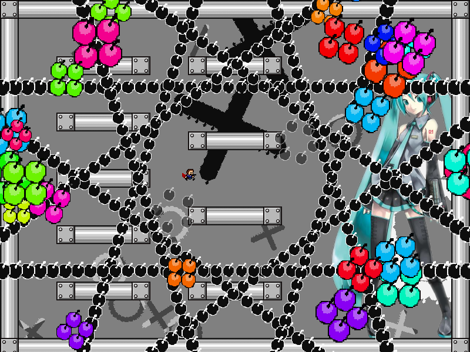
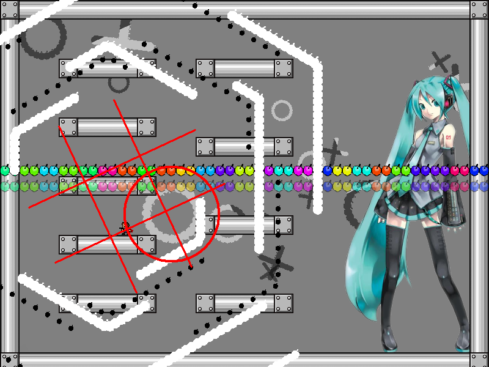
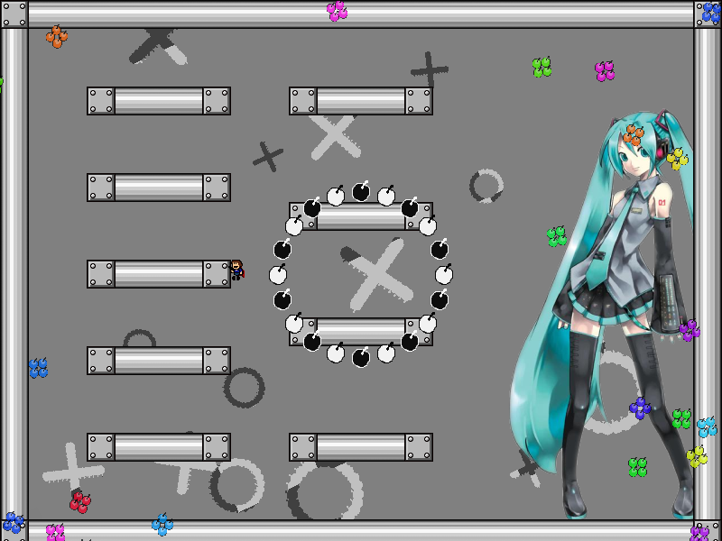
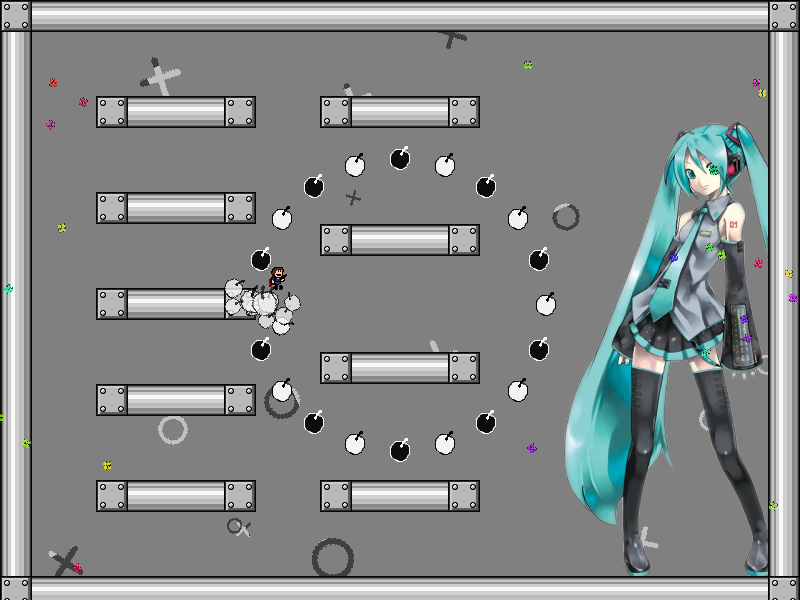
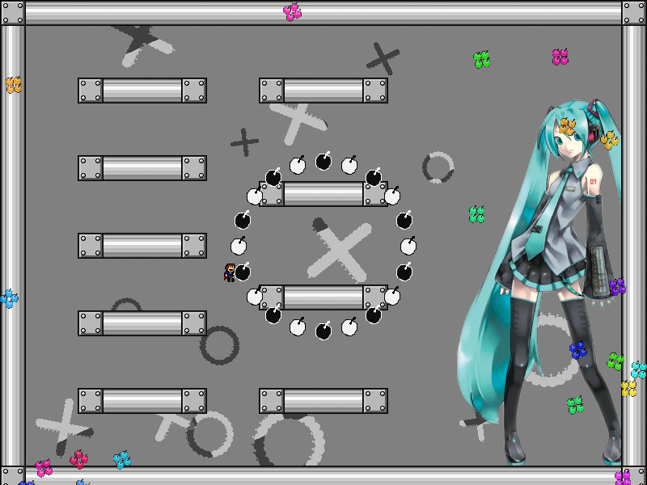
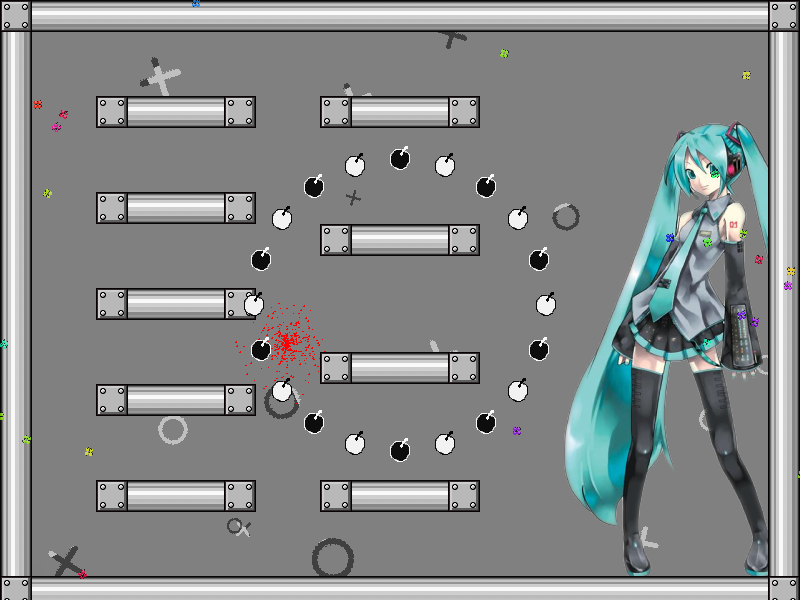
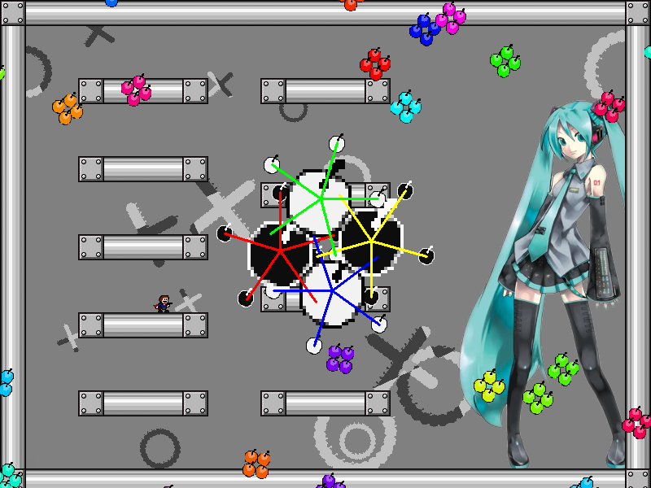
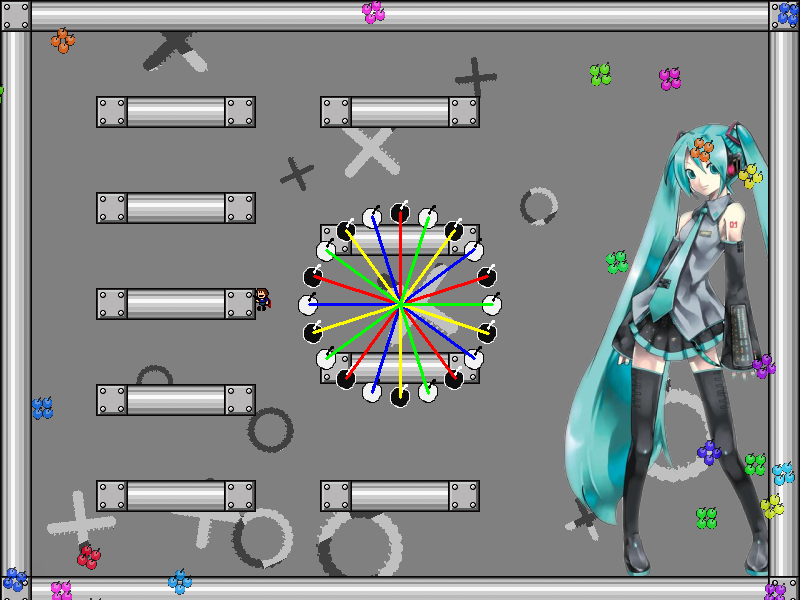

| creator | segment | label | jump |
|---|---|---|---|
| NN | 1:22.40~1:23.20 | P*A*S/R | double |
6-1~6-4の解答に対応する、択一型の弾幕です。
6-1開始以降存在している〇型弾幕と✕型弾幕の背景演出に関して、6-4において格子状の弾幕が生成される境界線を通過しても色が変化しないものが存在しています（fig.6-5.1）。
色の変化の影響を受けない〇型弾幕および✕型弾幕について、〇型弾幕がもつ色が正解の色、✕型弾幕がもつ色が不正解の色に対応しており、これらは互いにもつれた状態にあります。
したがって、当該の〇型弾幕または✕型弾幕がもつどちらかの色さえ確認することができれば正解の色を確定させることができます。

1:22.40において画面中央を中心として出現する円形弾幕に関して、正解の色をもつ弾については当たり判定が存在せず（fig.6-5.2.a, fig.6-5.2.b）、不正解の色をもつ弾については当たり判定が存在します（fig.6-5.3.a, fig.6-5.3.b）。




また、円形弾幕自体の角度については固定であり、色の配置のみがランダムになっています。
色の配置は6-4において確認することができます（fig.6-5.4.a, fig.6-5.4.b）。


6-4、6-5に共通して言えることとして、判断材料となる弾幕が複数のセクションに跨って長時間画面上に存在し続けているということがあります。
それはすなわち、その期間中であれば任意のタイミングでそれらの要素を確認することができるという柔軟性を持ち合わせていることを意味しています。
6-1~6-5は確認するべき要素が多いため、目線の管理が非常に重要になります。
6-4および6-5ついては、その柔軟性を生かし、目線管理の一連の流れの中で各人において余裕があると感じる瞬間に確認のタイミングを組み込むことができるという特徴があります。